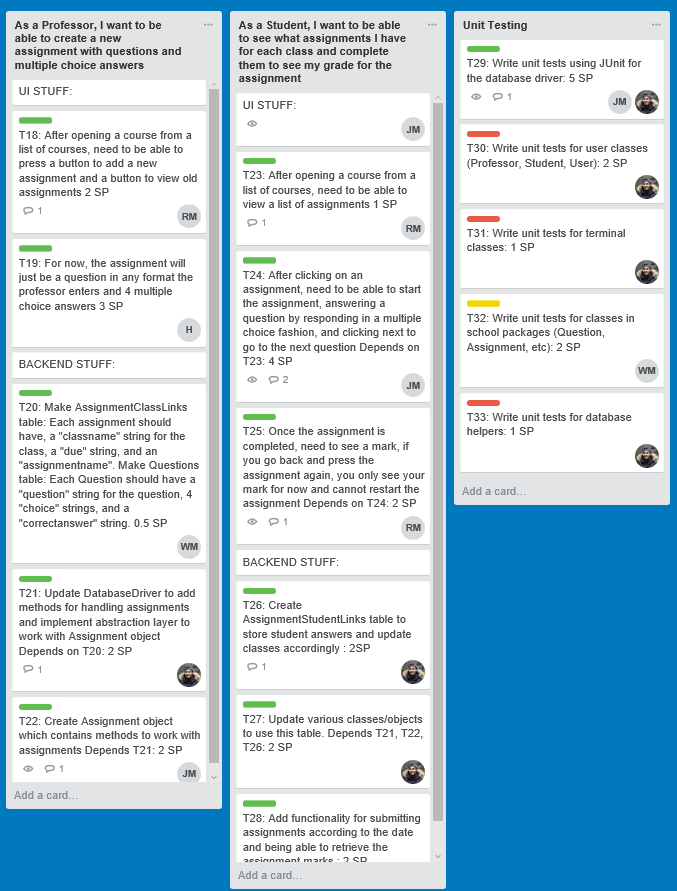

Contents
Sprint Plan
Here are the user stories/tasks we plan to finish for this sprint:

Tasks labelled with red signifies the tasks we plan to finish.
Here's our sprint plan/story point assignment:

Burndown Chart

User Stories/Personas
We did not update our user stories for this sprint since we finished all the leftover tasks from the last sprint. User stories can be seen here.
Sprint Report
Most of this sprint was dedicated towards completing leftover tasks from sprint 3 and testing our application. We started out the sprint by fixing bugs introduced by automatically generated Android code. We then moved on to completing the student submission backend, which was notable because we needed to go back and refactor some broken database code which took time out of completing our other tasks. At the same time the UI layout for creating assignments and answering assignments was being developed, which was hooked up to the backend after solving a few bugs.
For this sprint we continued to split the developer roles between backend/frontend. We added some tasks to address testing requirements, which was coded using JUnit. We greatly underestimated how long it takes to thoroughly test, since testing 1 class took about 5 hours.
Taskboard Snapshots
Before sprint execution:
After sprint execution:
Tasks labelled with green are done.
Tasks labelled with yellow are in progress.
Tasks labelled with red are not done.
Verification
For unit testing, we used the JUnit 4 testing framework. To run our tests, open the Stapp folder with Android Studio. After it is done loading, open the "app->java->com.stapp (androidTest)" folder. Then, right click on the "com.stapp (androidTest)" folder in the project explorer, and click the "Run tests in com.stapp" option.
Then, choose a target device. You will need to connect an Android phone or use a virtual Android phone to run the tests. After choosing a device, all the unit tests should run. You can see the results of the unit tests at the bottom of the Android Studio window.
Validation
For each UI-related task we completed for this sprint, we validated each one by writing reproducible steps with the expected result.
T23: After opening a course from a list of courses, need to be able to view a list of assignments
- Login as a professor (you can use username: nick, password: nick)
- Add a new course using the Add Course button
- Input the course code "CSCA08" and press done
- Back at the professor home page, you will see CSCA08 as a course
Code Review Strategy
- Each person should read another person's code (not your own code!)
- Note what we should stop doing and start doing.
- After each method, write down what you think could be improved.
- After each class, try to summarize your notes into 1-3 points that can be expanded on during the meeting.
- Don't single out people or be insensitive about your code being criticized. It should be a learning experience.
- Don't take a code review personally. It's just code!
- Use the Github commit log to easily see other people's code at a glance.
Code Review Summary
J.R.'s points:
- Code style needs to be consistent. In some files, 2-space tabs are used instead of 4-space tabs.
- We need to keep our code lines short. Especially in the DatabaseDriver class, lines should be kept under 80 characters long.
- This can be solved with linting software, to automatically employ Google style guide.
Harry(HaoYue)'s points:
- Front-end and back-end codes are seperated, in a way that's not confusing.
- Related functions and methods are grouped in the same package, making it very easy to navigate.
- Overall good organization, every package has its purpose and it is seperated in a way that's easily distinguishable in terms of functions
- File and package naming convention inconsistencies.
- XML file organization, activity vs. content XML files.
Rahul's points:
- Maintain good coding practices!
- Make sure to use javadocs for methods that have a complicated algorithm.
- Naming should follow camelCase for consistent style.
- Classes do work as intended but you should try to keep formatting consistent with the other classes.
- Inline comments would be useful for some important lines to make sure we understand what you've written.
Wen Bo's Points:
- We should adopt the Strategy Design Pattern
- The helper function can be fused with the regular class
- make use of interface so we can do mock testing
- certain method is impossible to test because we didn't implement Strategy Design Pattern
- Should make a release that can be shown to the client i.e Sohee Kang sooner
Richard's Points
- All static strings should be coded in res/strings.xml for good coding practice
- Any instances of floating action buttons should be removed as they are unused and auto-generated
- The Recyclers should display thier contents more clearly, and as more obviously click-able
- Layout student_menu_activity.xml needs to be restructured to align the Recycler properly
- The Assignment creation should use a DatePicker widget for selecting due dates